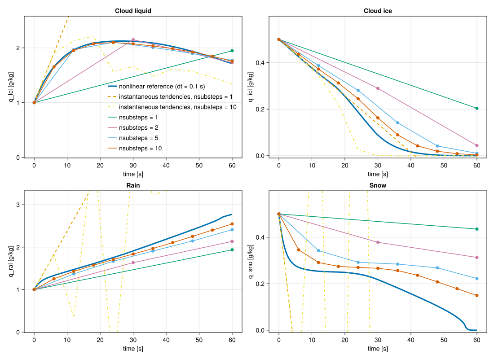

Bulk Tendencies
Linearized average tendencies
The microphysics tendency of the condensate species $q = (q_{\mathrm{lcl}}, q_{\mathrm{icl}}, q_{\mathrm{rai}}, q_{\mathrm{sno}})$ is
\[\frac{dq}{dt} = F(q),\]
where $F$ is the sum of the instantaneous rates $S_p$ of the individual processes $p$.
Some of these rates are stiff, especially those of depletion processes such as evaporation, sublimation and melting. To improve stability and allow larger time steps, the tendency is averaged over the model time step with a linearized implicit formulation, which approximates $F(q)$ locally by a linearized tendency:
\[\frac{dq}{dt} \approx M q + e,\]
with the matrix $M$ and the vector $e$ constructed from the rates $S_p$.
The model time step is divided into nsub equal substeps. Each substep:
- Computes the rates $S_p$ at the current state and builds $M$ and $e$ from them by the donor-based linearization.
- Takes a backward Euler step of the linearized tendency system for $q$.
- Derives from its result two limiters: $\alpha$ for the vapor budget and $f$ for the heating rate (and the per-donor factors $f_k$ based on $f$).
- Solves the same system again, with the limiters applied.
- Checks the realized heating and the condensate growth of the second step, and scales the tendencies uniformly by $g$ if a bound is still exceeded.
- Updates the temperature from the latent heat of the change in $q$.
The average tendency is the net change of $q$ over the model time step divided by its length. The following sections describe each part.
Donor-based linearization
Each process moves mass from a donor species, the species that loses mass, to a receiving species at the rate $S_p$. The linearization writes each rate according to its donor and receiver:
| Donor | Receiver | Linearized rate | Entries |
|---|---|---|---|
| condensate | condensate | $D\,q_{\text{donor}}$ | $-D$ in $M_{\text{donor},\text{donor}}$, $D$ in $M_{\text{receiver},\text{donor}}$ |
| condensate | vapor | $D\,q_{\text{donor}}$ | $-D$ in $M_{\text{donor},\text{donor}}$ |
| vapor | condensate | $S_p$, constant | $S_p$ in $e_{\text{receiver}}$ |
Here $D \ge 0$ is the decay coefficient of the donor. The vapor is not part of $q$, so a loss to the vapor has no entry for its receiver, and a gain from the vapor enters $e$.
A sink of a species therefore takes the form
\[\frac{dq}{dt} = -D q,\]
which corresponds to an exponential decay over the substep and keeps the species non-negative in the implicit step.
The decay coefficients $D$ and the sources in $e$ are computed from the state at the start of each substep and are held constant over it.
Kinds of processes
The 1-moment processes are of three kinds.
Transfers between two condensate species, such as accretion, autoconversion, melting and freezing. A transfer from $q_{\text{donor}}$ to $q_{\text{receiver}}$ at the rate $S \ge 0$ contributes
\[\frac{dq_{\text{donor}}}{dt} = -S, \qquad \frac{dq_{\text{receiver}}}{dt} = S,\]
and its donor is $q_{\text{donor}}$, with
\[D = \frac{S}{\max(q_{\min}, q_{\text{donor}})}.\]
Exchanges between the vapor and a condensate species $q_{\text{cond}}$ in either direction, such as rain evaporation and snow deposition and sublimation. An exchange at the rate $S$, positive from the vapor to $q_{\text{cond}}$, contributes $dq_{\text{cond}}/dt = S$, and the vapor changes by $-S$. A gain ($S \ge 0$) has the vapor as its donor and adds $S$ to $e_{\text{cond}}$. A loss has $q_{\text{cond}}$ as its donor, with
\[D = \frac{-S}{\max(q_{\min}, q_{\text{cond}})}.\]
Relaxations of the cloud condensate toward equilibrium: the condensation and evaporation of cloud liquid, and the deposition and sublimation of cloud ice. A relaxation contributes the same tendency as an exchange, but enters the linearized tendency through its transfer over the substep, as described in the next section.
Here $q_{\min}$ is a small positive floor that keeps $D$ finite for a vanishing donor.
Relaxation of the cloud condensate
The scheme computes the rate of a relaxation as $S = (q^\star - q_{\text{cond}})/\tau$, with the relaxation timescale $\tau$, where $q^\star = q_{\text{cond}} + S\tau$ is the condensate that the relaxation approaches. The rate $S$ includes two corrections, so $q^\star$ includes them as well: the latent heat of the phase change reduces the supersaturation that relaxes, through the factor $\Gamma = 1 + (L/c_p)\,dq_{\mathrm{sat}}/dT$, and evaporation or sublimation cannot remove more condensate than exists, so $q^\star \ge 0$.
The transfer over the substep is the time average of the relaxation, see [25] Appendix C:
\[\Delta q = S\,\tau\,\bigl(1 - e^{-\Delta t/\tau}\bigr) = S\,\Delta t\,\varphi(\Delta t/\tau), \qquad \varphi(x) = \frac{1 - e^{-x}}{x}.\]
The substep never crosses $q^\star$ for any $\Delta t/\tau$, and the instantaneous rate is recovered for $\Delta t \ll \tau$. A gain ($\Delta q \ge 0$) adds $\Delta q / \Delta t$ to $e_{\text{cond}}$. A loss ($\Delta q < 0$) adds $-D$ to $M_{\text{cond},\text{cond}}$, with
\[D = \frac{|\Delta q|}{\max(q_{\text{cond}} + \Delta q, q_{\min})\,\Delta t}.\]
This decay removes exactly $|\Delta q|$ when acting alone (the $q_{\min}$ floor keeps $D$ finite when the whole pool sublimates), keeps $q \ge 0$ when combined with the other sinks, and, unlike a plain $S/q$ decay, does not remove all the condensate when $\tau \ll \Delta t$. This matters when $\tau$ is a few seconds (e.g. PrescribedIceNumber with a large prescribed ice number concentration), where treating the instantaneous rate as a constant over the substep produced a deposition/sublimation flip-flop.
Linearized implicit solve
A substep of width $\Delta t$ starts from the species $q^n$ and solves the linearized tendency implicitly for the species $q^{n+1}$ at its end:
\[\frac{q^{n+1} - q^n}{\Delta t} = M_{\mathrm{coll}}\, q^{n+1} + M_{\mathrm{phase}}\, \mathrm{diag}(f_k)\, q^{n+1} + \alpha f\, e ,\]
where $M = M_{\mathrm{coll}} + M_{\mathrm{phase}}$ is split into the collision and conversion decays $M_{\mathrm{coll}}$ (autoconversion, accretion, shedding, which move mass within a phase) and the phase-change decays $M_{\mathrm{phase}}$ (evaporation and sublimation, and the transfers between a liquid and an ice species: freezing, melting, riming), $\alpha \le 1$ limits the vapor sources, $f \le 1$ limits the heating from the phase changes, and $\mathrm{diag}(f_k)$, with $k$ over lcl, icl, rai, sno, holds the per-donor factors derived from $f$. The limiters are described in the next section. The step is taken twice. The first step uses $\alpha = f = 1$ and $f_k = 1$; its result gives the realized transfers and heating from which the limiters are computed. The second step applies them: the vapor sources are scaled by $\alpha f$, and in $M$ the decays of the terms that change phase are scaled per donor. The result of the second step advances the substep.
\[\left(I/\Delta t - M_{\mathrm{coll}} - M_{\mathrm{phase}}\, \mathrm{diag}(f_k)\right) q^{n+1} = \alpha f\, e + q^n/\Delta t,\]
and the average tendency over the substep is
\[\overline{\dot{q}} = g \frac{q^{n+1} - q^n}{\Delta t},\]
where $g \le 1$ is a uniform scaling factor applied when a bound is still exceeded after the second step.
Over the substep, a transfer moves mass at the rate $g\,D\,q^{n+1}_{\text{donor}}$, with the additional factor $f_k$ of its donor if the transfer changes phase. An exchange or a relaxation moves mass at the rate $g \left(\alpha f\, e_{k} - f_{k}\,D\,q^{n+1}_k \right)$, where $e_k$ is its entry in $e$. These rates sum to the average tendency $\overline{\dot{q}}$, and LinearizedAverageVerbose returns their average over the substeps.
Vapor and latent heating limiters
Two quantities are not part of the linear solve: vapor and temperature. Vapor is diagnosed based on the other tracers $q_v = q_{\mathrm{tot}} - \sum_k q_k$. Change of the temperature is based on the solved phase changes
\[\Delta T_1 = \frac{ L_v \left(\Delta q^1_{\mathrm{lcl}} + \Delta q^1_{\mathrm{rai}}\right) + L_s \left(\Delta q^1_{\mathrm{icl}} + \Delta q^1_{\mathrm{sno}}\right) }{c_p},\]
where $\Delta q^1_k = q^1_k - q^n_k$ is the mass transfer of species $k$ in the first backward Euler step (the superscript $1$ marks the first of the two backward Euler steps of the substep; $q^{n+1}$ is its end), $L_v$ and $L_s$ are the reference latent heats and $c_p$ the dry-air specific heat of the substep temperature update, so the fusion heat of freezing and melting is included. Two factors are derived from it, $\alpha$ for the vapor and $f$ for the heating, and the step is taken a second time with them.
Vapor limiter
Vapor transfers relax the vapor toward the saturation over the phase of their condensate. In other words, the phase changes can bring the vapor down, at most, to the lower of the liquid and ice saturation specific contents evaluated at the temperature at the end of the substep (i.e. including the change caused by the latent heat released). The solved vapor can end below this limit when the vapor sources were computed assuming more vapor than the substep provides: (i) several sources relax the same excess, each computed from the whole of it; (ii) an evaporation or sublimation that would have supplied vapor is clamped to its condensate pool; (iii) or it is shared with the other sinks of that pool in the implicit step. With $q_{\mathrm{sat},\min}$ the lower of the two saturation specific contents, and $\Delta T_1$, $q^1_v$ the temperature change and the vapor after the first backward Euler step, the vapor shortfall is
\[ \Delta q_{\mathrm{gap}} = q_{\mathrm{sat},\min} + \frac{dq_{\mathrm{sat},\min}}{dT}\,\Delta T_1 - q^1_v .\]
The vapor taken by the sources is
\[ \Delta q_{\mathrm{src}} = \sum_k e_k\,\Delta t ,\]
where $e_k$ are the vapor sources of the linearized tendency. The sources are scaled by
\[ \alpha = \max\!\left(0,\; 1 - \frac{\Delta q_{\mathrm{gap}}}{\Gamma_{\min}\,\Delta q_{\mathrm{src}}}\right) \quad \text{if } \Delta q_{\mathrm{gap}} > 0 \text{ and } \Delta q_{\mathrm{src}} > 0, \text{ else } \alpha = 1 ,\]
(the second condition only avoids the division by zero when there are no sources; in the code a source sum below one ulp of the saturation content counts as zero) where $\Gamma_{\min} = 1 + (L/c_p)\,dq_{\mathrm{sat},\min}/dT$, with the latent heat of the phase of the lower saturation and the same reference $L$ and dry-air $c_p$ as in $\Delta T_1$, so that the scaled sources leave the vapor on the floor.
Removing the fraction $1 - \alpha$ of the sources returns $(1 - \alpha)\,\Delta q_{\mathrm{src}}$ of vapor and lowers the saturation by $(\Gamma_{\min} - 1)(1 - \alpha)\,\Delta q_{\mathrm{src}}$ through the heating it removes, so with this $\alpha$ the vapor ends exactly on the lower saturation at the corrected temperature. The limiter only reduces sources. In subsaturated air without vapor sources $\alpha = 1$ and the evaporation and sublimation sinks act unchanged; the limiter does not raise the vapor to saturation. Vapor above the upper saturation is not limited either, as it will be removed by the sources of the next substep and poses no positivity risk.
Latent heating limiter
The heating of the first step after applying the vapor limiter is equal to
\[\Delta T_\alpha = \Delta T_1 - (1 - \alpha)\, \frac{ L_v \left(e_{\mathrm{lcl}} + e_{\mathrm{rai}}\right) + L_s \left(e_{\mathrm{icl}} + e_{\mathrm{sno}}\right) }{c_p}\,\Delta t,\]
and $\Delta T_{\max}$ = max_latent_heating_rate × $\Delta t$ is the allowed temperature change per substep (ClimaParams microphysics_max_latent_heating_rate, K/s, default 2 K per minute; inf disables the limiter, the value must be positive). The bound is on a rate, so it does not vanish as $\Delta t \to 0$: it is a modelling choice that keeps one substep from heating or cooling the host model by more than the bound, and the default is meant to be active in production, where it stays inactive in ordinary conditions. The tests of the relaxation itself disable it to compare against unlimited references.
Then the heating limiter takes the form of
\[f = \min\!\left(1, \frac{\Delta T_{\max}}{|\Delta T_\alpha|}\right), \qquad f_k = \frac{f\,(1 + D^{\mathrm{coll}}_k \Delta t)}{1 + D^{\mathrm{coll}}_k \Delta t + (1 - f)\,D^{\mathrm{phase}}_k \Delta t} ,\]
where $D^{\mathrm{phase}}_k$ is the sum of the decays of the terms of donor $k$ that change phase and $D^{\mathrm{coll}}_k$ the sum of its other decays, the column sums of $-M_{\mathrm{phase}}$ and $-M_{\mathrm{coll}}$. The formula for $f_k$ arises from scaling the realized backward Euler transfer of the donor by $f$, and not just its coefficient: a weaker decay leaves a larger pool at the end of the step, so $f_k \le f$, with equality when $f = 1$ or when the donor has no phase-change decay.
In the second backward Euler step the vapor sources are scaled by $\alpha f$ and the phase-changing decays of each donor by $f_k$; the collision and conversion decays are not scaled.
Uniform scaling
After the second backward Euler step, with $\Delta q^2_k = q^{n+1}_k - q^n_k$ its transfers, $\Delta T_2$ the corresponding heating, $\Delta q_{\mathrm{cond}} = \sum_k \Delta q^2_k$ the condensate growth and $q^n_v = \max(0, q_{\mathrm{tot}} - \sum_k q^n_k)$ the initial vapor,
\[g_T = \min\!\left(1, \frac{\Delta T_{\max}}{|\Delta T_2|}\right), \qquad g_v = \frac{q^n_v}{\Delta q_{\mathrm{cond}}} \text{ if } \Delta q_{\mathrm{cond}} > q^n_v, \text{ else } 1, \qquad g = \min(g_T, g_v), \qquad \overline{\dot{q}} = g\,\frac{q^{n+1} - q^n}{\Delta t} .\]
The uniform factor $g$ covers the edge cases the above limiters miss (pools that refill each other, such as rain freezing on cloud ice while snow melts) and bounds the condensate growth by the vapor available. With the implicit decays keeping every pool non-negative, no tracer can become negative in a substep however stiff the processes are. Heating and the vapor budget are linear in the tendencies, so both bounds are met exactly by this one factor, which keeps the substep at two backward Euler steps. Because the heating limiter bounds a rate, it acts per substep: with fine substeps it can engage during the fast initial part of a relaxation that is below the bound when averaged over a longer substep. Negative species are clamped to zero on input.
Sparse 4×4 structure
The matrix $A = I/\Delta t - M$ of the implicit solve has a fixed sparse structure,
\[A = \left[ \begin{array}{cc|cc} A_{\mathrm{lcl},\mathrm{lcl}} & A_{\mathrm{lcl},\mathrm{icl}} & 0 & 0 \\ A_{\mathrm{icl},\mathrm{lcl}} & A_{\mathrm{icl},\mathrm{icl}} & 0 & 0 \\ \hline A_{\mathrm{rai},\mathrm{lcl}} & 0 & A_{\mathrm{rai},\mathrm{rai}} & A_{\mathrm{rai},\mathrm{sno}} \\ A_{\mathrm{sno},\mathrm{lcl}} & A_{\mathrm{sno},\mathrm{icl}} & A_{\mathrm{sno},\mathrm{rai}} & A_{\mathrm{sno},\mathrm{sno}} \end{array} \right].\]
Melting and freezing couple the two cloud species, and the two precipitation species. Autoconversion and accretion move mass from the cloud to the precipitation species. No process transfers mass from a precipitation species to a cloud species, so the upper right block is zero. This allows an efficient solve:
- $q_{\mathrm{lcl}}$ and $q_{\mathrm{icl}}$ are solved as a coupled 2×2 system
- $q_{\mathrm{rai}}$ and $q_{\mathrm{sno}}$ are then solved as a 2×2 system, with the new cloud species as sources
This avoids forming or inverting a full dense matrix and is efficient on both CPU and GPU.
Substepping
A single linearization assumes the operator $M$ is constant over the model time step. Substeps rebuild $M$ and $e$ from the updated state, which captures nonlinear effects and regime changes, for example near freezing. As nsub increases, the solution approaches the nonlinear evolution of the system.
Thermodynamic assumption
Within each timestep, we assume that thermodynamic variables such as density and energy remain approximately constant. As a result, temperature changes are modeled solely through latent heating:
\[\frac{dT}{dt} = \frac{L_v}{c_p} \left(\dot{q}_{\mathrm{lcl}} + \dot{q}_{\mathrm{rai}}\right) + \frac{L_s}{c_p} \left(\dot{q}_{\mathrm{icl}} + \dot{q}_{\mathrm{sno}}\right)\]
Here $L_v$ and $L_s$ are the constant reference latent heats (at the thermodynamic reference temperature) and $c_p$ is the dry-air specific heat capacity. This is consistent with the microphysics-only update and avoids coupling to a full thermodynamic solve.
Processes in the code
_microphysics_source_terms returns each 1-moment process as a term of its kind:
| Kind | Constructor | Example |
|---|---|---|
| Transfer | Transfer(:Donor => :Receiver, S) | Transfer(:q_lcl => :q_rai, S), autoconversion |
| Exchange with the vapor | VaporExchange(:Condensate, S) | VaporExchange(:q_sno, S), deposition on snow |
| Relaxation | VaporRelaxation(:Condensate, S, τ) | VaporRelaxation(:q_lcl, S, τ), condensation |
To add a process to the 1-moment scheme, compute its rate in Microphysics1M and add its term to _microphysics_source_terms. The instantaneous tendencies, the entries of $M$ and $e$, the rate of the process in the verbose modes and its treatment by the latent-heating limiter follow from the term: a transfer between a liquid and an ice species (:q_lcl, :q_rai versus :q_icl, :q_sno) and every exchange with the vapor change phase. A transfer from a precipitation species to a cloud species is not supported, because the block solve assumes that the upper right block of $M$ is zero.
Example figures
include("plots/BulkTendencies_plots.jl")CairoMakie.Screen{SVG}

The figure compares:
- a nonlinear reference solution, obtained using a finely substepped explicit integration
- the linearized implicit method with different numbers of substeps (
nsub) - a single explicit update using the instantaneous tendency at $t=0$
- explicit updates, using the instantaneous tendency with $10$ substeps
Initial conditions
- $\rho = 1\,\mathrm{kg/m^3}$
- $q_{\mathrm{tot}} = 13\,\mathrm{g/kg}$
- $q_{\mathrm{lcl}} = q_{\mathrm{rai}} = 1\,\mathrm{g/kg}$
- $q_{\mathrm{icl}} = q_{\mathrm{sno}} = 0.5\,\mathrm{g/kg}$
- $T = 278.15\,\mathrm{K}$
These conditions activate multiple processes simultaneously (liquid, ice, rain, and snow interactions) and are close to freezing, making the case strongly nonlinear.
Interpretation
nsub = 1corresponds to a single linearization over the full step, which is the least accurate but cheapest approximation.- Increasing
nsubimproves the solution by updating the linearization more frequently. - For sufficiently large
nsub, the solution approaches the nonlinear reference trajectory. Evennsub = 2agrees well with the nonlinear solution. - The dashed line (instantaneous tendency) shows a simple explicit Euler step, which can significantly deviate from the true evolution.
- The yellow dash-dotted line shows an integration using instantaneous tendencies with 10 substeps and exhibits significant instabilities. Thus, without the linearized model, even 10 substeps do not converge.
This demonstrates that the linearized implicit substepping method provides a controllable trade-off between cost and accuracy, while maintaining stability.
Current limitations
- Average (implicit) bulk tendencies are currently implemented only for the one-moment microphysics scheme.
- For other microphysics schemes, only instantaneous bulk tendencies are available at present.